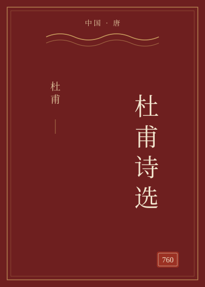

杜甫诗选
一、基本信息
| 作者 | 杜甫 |
|---|---|
| 成书/出版 | 诗作于735—770年间；通行选本数百首 Du Fu — Encyclopaedia Britannica（百科全书） |
| 国别/地区 | 中国 |
| 时代 | 古代 · 唐 |
| 体裁 | 诗选集 |
| 语言 | 汉语（文言诗体） |

二、创作背景
本库以'选集'立目：通行选本篇目大体含《望岳》《兵车行》《丽人行》《自京赴奉先县咏怀五百字》《春望》《月夜》《羌村三首》'三吏''三别'《茅屋为秋风所破歌》《秋兴八首》《登高》《登岳阳楼》等（选目因版本而异，本页不列固定目录，逐版本待核）。
Britannica（Du Fu 条）：早年'celebrated nature and time's passing'，后'turned to biting critiques of war ('The Ballad of the Army Carts') and veiled satire of court luxury ('The Beautiful Woman')'（转向战争批判与宫廷讽喻），755—759年间的诗'expressed deep compassion for people caught in war'（对战乱中的民众表达深切悲悯）。
创作分期（通说）：读书漫游期（735前—746）、困守长安期（746—755）、陷贼与为官期（756—759）、漂泊西南期（760—770）。
三、内容脉络
青年与长安：《望岳》——'会当凌绝顶，一览众山小'（原文，公有领域）；《兵车行》——'君不见青海头，古来白骨无人收'（原文，公有领域）；《自京赴奉先县咏怀五百字》——'朱门酒肉臭，路有冻死骨'（原文，公有领域）。
乱离：《春望》——'国破山河在，城春草木深'（原文，公有领域）；《月夜》——'遥怜小儿女，未解忆长安'（原文，公有领域）；'三吏''三别'（《新安吏》《石壕吏》《潼关吏》《新婚别》《垂老别》《无家别》）——战乱中的人民群像（通说）。
成都草堂：《茅屋为秋风所破歌》——'安得广厦千万间，大庇天下寒士俱欢颜'（原文，公有领域）；《春夜喜雨》《客至》（通说）。
夔州与漂泊：《秋兴八首》——夔府孤城落日（通说）；《登高》——'无边落木萧萧下，不尽长江滚滚来'（原文，公有领域）；《登岳阳楼》——'亲朋无一字，老病有孤舟'（原文，公有领域）。
四、主要人物表
| 人物 | 身份 | 说明 |
|---|---|---|
| '我'（忧民诗人） | 左拾遗·流民 | '穷年忧黎元，叹息肠内热'（《奉先咏怀》原文，公有领域）——诗中的自我形象 |
| 石壕村老妇、新婚妻子、无家老卒 | '三吏三别'人物群 | 战乱中被征发的人民（通说） |
| 李白、高适、岑参 | 诗友 | 酬赠诗对象（通说） |
五、主题与艺术特点
- '诗史'精神：个人命运与国家危难的同步书写（通说）。
- 儒家的仁：'致君尧舜上，再使风俗淳'（《奉先咏怀》原文，公有领域）——政治理想与失败。
- 律诗的极致：《登高》被后世推为'古今七律第一'（明代胡应麟语，通说待核）。
- 伦理与技巧的合一：Britannica——'humane concern'与'prosodic skill'的融合为后世标准（Britannica）。
- 艺术特点：沉郁顿挫、炼字炼句（'语不惊人死不休'——原文，公有领域）、组诗结构（秋兴八首）。
六、影响与评论
- Britannica（Du Fu 条）：'widely considered the greatest in Chinese literary history'；'set a lasting standard for Chinese poetry and later influenced poets addressing social and political issues worldwide'（为后世立标准并影响全世界关注社会政治的诗人）。
Du Fu — Encyclopaedia Britannica（百科全书） - Britannica（Chinese literature 条）：Du Fu (712–770) praised for 'erudite classicism' and compassion amid war（'博雅古典主义'与战乱中的悲悯——B083）。
Chinese literature — Encyclopaedia Britannica（百科全书） - 对宋诗与后世的影响：'诗史'传统直通白居易新乐府与宋以后现实主义诗歌（通说待核）。
Du Fu — Encyclopaedia Britannica（百科全书） - 世界回响：'杜甫'被译为 Du Fu/Tu Fu，1960s美国'杜甫热'（雷克斯罗斯《杜甫诗百首》——通说待核）。
Du Fu — Encyclopaedia Britannica（百科全书）
七、阅读建议
- 律诗格律（平仄对仗）与用典密集——选带注释译本。
- '诗史'需要安史之乱的历史底图（三吏三别尤其）。
- 夔州诗的意象繁复（秋兴八首）需逐首细读。
- 《杜甫诗选》（山东大学出版社/人民文学版，通说待核）：通行选本。
- 仇兆鳌《杜诗详注》（中华书局，通说待核）：全集注本。
- 英译：A. C. Graham（通说待核）与 Stephen Owen《The Poetry of Du Fu》（2016全套英译+数据库，通说待核）。
先读《望岳》《春望》《登高》立坐标 → '三吏三别'与《奉先咏怀》看诗史 → 《秋兴八首》攻律诗 → 编年通读选本。
八、待核实
- 选本篇目因版本而异——山东大学版/人文版目录逐版本核对。
- 引文（春望、登高等）逐字核对照通行本。
- Stephen Owen《The Poetry of Du Fu》（De Gruyter 2016 open access 说，通称）待核。
- 胡应麟'古今七律第一'出处（《诗薮》）待核。
本页主要来源
杜甫的其他收录作品：杜甫诗选